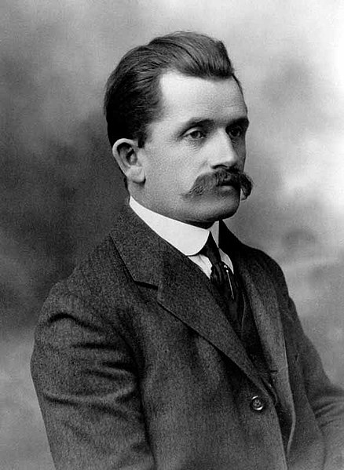

|
Ferdinand Porsche ist der Gründungsvater der heutigen weltbekannten Sportwagenfabrik in Stuttgart. Er wurde im Jahr 1875 geboren. Im ersten Weltkrieg konstruierte er Militärfahrzeuge. Danach arbeitete er als Fahrzeugingenieur bei Daimler-Benz. Relativ spät, erst mit 55 Jahren, gründete er seine eigene Firma und konstruierte den ersten Volkswagen (VW). |
aiusdgvfiuavibgadsil |
 |
|
|
hall |
Die "Dr. Ing. h.c. F." Porsche Aktiengesellschaft ist ein deutscher Kraftfahrzeughersteller mit Sitz in Stuttgart-Zuffenhausen. Ursprung des Unternehmens ist ein 1931 von Ferdinand Porsche in Stuttgart gegründetes Konstruktionsbüro, das nach 1945 in einer Automobilfabrik aufging, die vor allem Sportwagen produzierte.Das offizielle Gründungsdatum ist der 25.April 1931. Seit vielen Jahren ist die Firma Porsche der erfolgreichste Automobilhersteller der Welt und auch einer der größten Steuerzahler in Stuttgart. Im Herbst 2005 wurde Porsche größter Besitzer bei der Volkswagen AG in Wolfsburg. Porsche zahlte für die Anteile rund 3.000.000.000 Euro, die aus dem erwirtschafteten Betriebsvermögen der Firma Porsche stammen. |